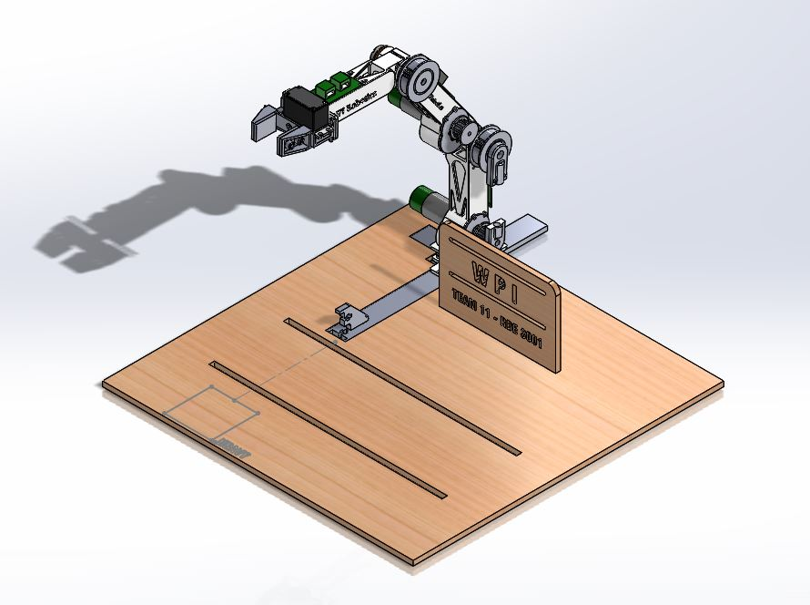
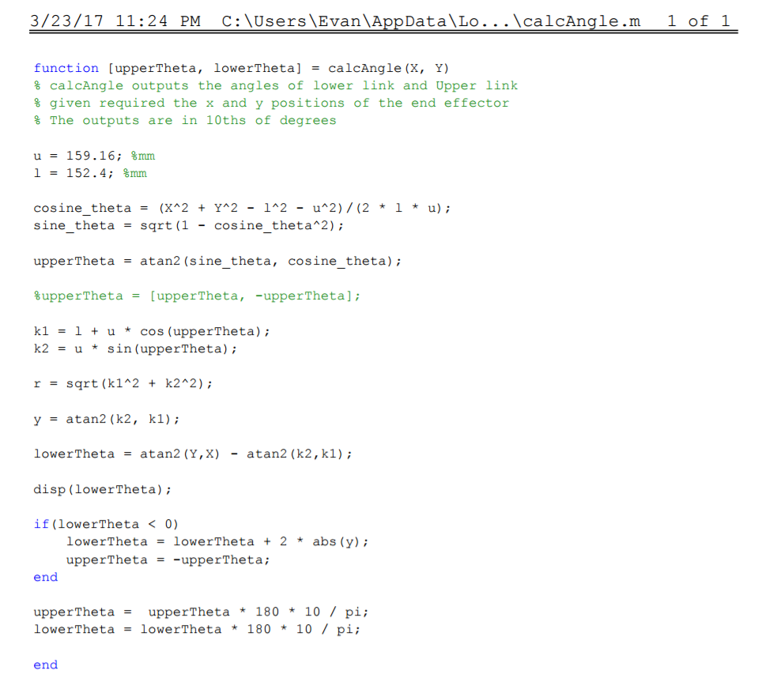

Unified Robotics III

The final project for Unified Robotics III was an embedded controls project. The main objective of the project was program the arm to lift and sort blocks autonomously from a moving conveyor to simulate an assembly line. My responsibilities included determining sensor placement, tuning the PID, writing high-level logic code, and setting up the inverse kinematics calculations in MATLAB. The motors were driven by a DAC, which connected to the microcontroller via an SPI interface.
The structure of the program was broken up into a main file which was linked to different libraries. The PID code was linked to a globals library which contained the variables for the integral error, as well as the PID constants. The return of the calcPID function was used by the gotoAngles function to drive the motors to the correct positions.
MATLAB Inverse Kinematics Code
|  |